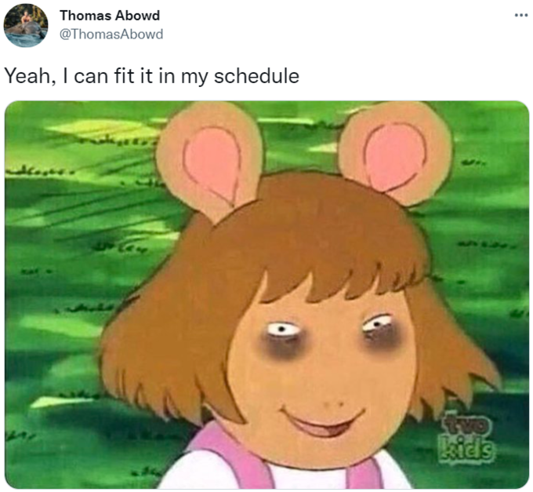

<!DOCTYPE html>
<html>
    <head>
        
        <link rel="stylesheet" href="style.css">
    </head>
   
</html>
<div class="styling" >

    <body>
        
        <div class="work">
            <div class="texts">
                <h1>Blog 1 <br></h1>
                <p>
                    The first assignment for me personally was a fun way to learn more CSS and HTML. I did Web dev in high school, 
                    but it was always something that I thought was easy and thus causing me to not pay much attention to the actual workings 
                    of the languages. But I think that this time around I felt that becuase of this project, I was much more interested in 
                    learning about HTML and CSS becuase this assignment was just asking us to do a basic html page and use the basic understanding
                    of HTML instead of us configuring extremely hard web dev code right of the bat. 
                    <br><br> The main challenges I faced was when I was working with CSS. I had to re-learn some of the CSS commands such as padding 
                    so I could make my page look appealing. I also think that learning how to work with github was another big challenge becuase I 
                    hadn't worked with it before. But I would say that it was a great learning experience for me. I would say it was tiring to go back 
                    and forth to figure out how to actually style the page, but it was a great learning process. 
                    <br><br>
                    As I said before, I came into this class knowing some HTML and CSS and that made it pretty easy for the basic HTML part but I had 
                    to relearn a bit of material for the CSS portion. I decided to add CSS to my project even though it wasn't required becuase I wanted
                    to learn a bit more material and I had time on my hand during that time so I wanted to be productive and showcase the work. 
                    <br><br>
                    I think the post helpful resource included the CSS library that we can go through to find the various commands because that helped me 
                    understand what the commands did and how I could use it in my code. I used this resource by first reading about each command that I 
                    needed and then I learned about how I could use them and then I began experimenting with them to see what happens. It was really fun
                    to see what would happen id I use paticular commands. Overall I think that this was a very easy assignment that helped me ease into Web Dev!

                    <br><br>
                    
                </p>
            </div>
    
        </div>
        <div class = "im">
            
        </div>
    </body>
            
    <div class="blogs">
        <ul>
            <li class="linking"><a href="index.html">Index Page</a></li>

            <li class="bloglink"><a href="blog.html">Blog Page</a></li>
        </ul>
    </div>


</div>